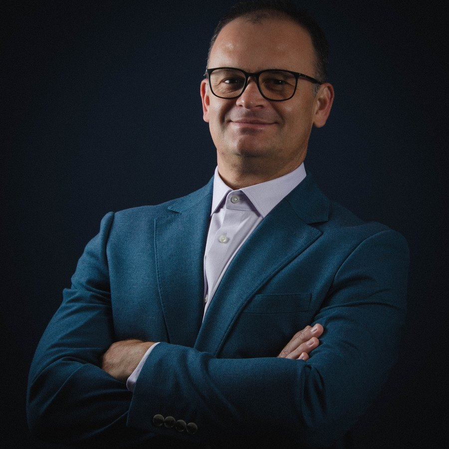

Mentoria privada · Líder Sem Título
Uma mentoria de liderança desenhada pra você e pra mais ninguém. Noventa dias, ao vivo, comigo. Pra líder cansado de performar e pronto pra construir algo que dure.
Aplicar para uma vagaVagas por aplicação. Eu avalio cada uma pessoalmente.

Quem conduz
Eu sou diretor de operações no Reino Unido, com mais de duas décadas à frente de equipes e operações, e fundador de negócios em mais de um país. Isso não é teoria de livro, é a cadeira onde eu sento todo dia.
Mas a liderança que mais me ensinou aconteceu no silêncio, quando tudo que eu tinha construído desabou e eu precisei decidir quem eu era sem nada disso. Foi no lugar mais duro que existe, sem cargo, sem título, que eu descobri o que sobra quando tiram tudo. Reconstruí do zero, ergui quatro negócios e escrevi os livros que viraram este método.
É por isso que eu não conduzo um curso. Eu sento ao seu lado como alguém que já esteve no fundo e voltou.
O formato
Aula gravada. É conversa ao vivo, só sobre a sua liderança e a sua situação real.
Vídeo pra assistir no sofá. É um plano desenhado pra você, que não serve pra mais ninguém.
Conteúdo pra todo mundo. É um caminho pra uma pessoa de cada vez: você.
Ao fim de cada sessão, você recebe o mapa mental da nossa conversa: tudo que a gente enxergou e decidiu, organizado numa página só. Você não sai com anotação solta, sai com um mapa pra aplicar na semana seguinte.
Como funciona
A gente se encontra, só eu e você, a cada quinzena, ao longo de 90 dias. Você traz a sua liderança real e a gente trabalha em cima dela.
Decisão difícil não espera a próxima quinzena. Você fala comigo quando a pressão aperta, no meio do caminho.
Cada encontro vira um mapa seu, pra sempre. Nada se perde, tudo vira ação.
Despir, reconstruir e liberar. O mesmo caminho dos meus livros, aplicado à sua liderança, não à de um aluno genérico.
Pra quem é
É pra você se
Você lidera e sente que performa mais do que vive.
Você já tentou curso e vídeo e continuou no mesmo lugar.
Você quer alguém que já esteve no fundo e voltou, não um teórico.
Você está disposto a olhar pra dentro e fazer o trabalho.
Não é pra você se
Você quer uma fórmula mágica sem se olhar.
Você quer algo pra assistir e esquecer.
Você não está pronto pra ser honesto consigo mesmo.
A vaga
Eu conduzo pouquíssimas pessoas por vez, porque 1:1 de verdade toma tempo real, e o meu tempo é real. Aqui você não compra, você se candidata. Preenche o formulário, eu leio pessoalmente, e se fizer sentido a gente marca uma conversa.
A conversa é sem compromisso. O valor eu falo nela, depois de entender o seu caso.